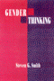
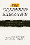
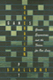
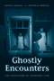
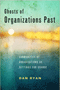
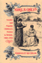

Browse
other Titles:
A B C
D E F
G H I
J K L
M N O
P Q R
S T U
V W X
Y Z |
|
Garden
Cities for America
The Radburn Experience
Schaffer,
Daniel
290 pp • Spring 1982
paper 978-0-87722-258-3 |
 |
Gardens
of Philadelphia and the Delaware Valley
Klein,
Jr., William M., photographs by Derek Fell
320 pp • 8x10 • Spring 1995
paper 978-1-56639-313-3 |
 |
Gatherings
in Diaspora
Religious Communities and the New Immigration
edited
by Warner, Stephen R. and Judith G. Wittner
416 pp • 6x9 • Spring 1998
paper 978-1-56639-613-4
cloth 978-1-56639-614-1
|
 |
Gay
and Lesbian Politics
Sexuality and the Emergence of a New Ethic
Blasius,
Mark
240 pp • 5.5x8.25 • Fall 1994
paper 978-1-56639-174-0
cloth 978-1-56639-173-3 |
|
The
Gender Knot
Unraveling Our Patriarchal Legacy
Johnson,
Allan G.
320 pp • 6x9 • Spring 2005
paper 978-1-59213-383-3
cloth 978-1-59213-382-6
|
|
The
Gender Knot
Unraveling Our Patriarchal Legacy
Third Edition
Johnson,
Allan G.
322 pp • 6x9 • Fall 2014
paper 978-1-43991-184-6
cloth 978-1-43991-183-9 |
 |
Gender
Politics and MTV
Voicing the Difference
Lewis,
Lisa A.
300 pp • Spring 1990
paper 978-0-87722-942-1
cloth 978-0-87722-693-2 |
|  |
Gender
Thinking
Smith,
Steven G.
384 pp • 6x9 • Fall 1992
paper 978-0-87722-964-3
cloth 978-0-87722-963-6 |
|  |
The Gendered Executive
A Comparative Analysis of Presidents, Prime Ministers, and Chief Executives
edited by Martin, Janet M., and MaryAnne Borrelli
296 pp • 6x9 • Fall 2016
paper 978-1-4399-1364-2
cloth 978-1-4399-1363-5
|
 |
A
Genealogy of Queer Theory
Turner,
William B.
256 pp • 6x9 • Spring 2000
paper 978-1-56639-787-2
cloth 978-1-56639-786-5 |
|  |
Generation
Games
Genetic Engineering and the Future for Our Lives
Spallone,
Pat
343 pp • 6x9 • Spring 1992
paper 978-0-87722-967-4
cloth 978-0-87722-966-7 |
|
Genocide
in Paraguay
edited
by Arens, Richard
224 pp • Fall 1977
paper 978-0-87722-088-6 |
 |
The
German Greens
Paradox between Movement and Party
edited
by Mayer, Margit and John Ely, translated by Michael Schatzschneider
352 pp • 6x9 • Spring 1997
paper 978-1-56639-516-8
cloth 978-1-56639-515-1 |
 |
Getting Paid While Taking Time
The Women's Movement and the Development of Paid Family Leave Policies in the United States
Sholar, Megan A.
252 pp • 5.5x8.25 • Fall 2016
paper 978-1-4399-1295-9
cloth 978-1-4399-1294-2
|
|  |
Ghostly Encounters
The Hauntings of Everyday Life
Waskul, Dennis with Michele Waskul
164 pp • 5.5x8.25 • Spring 2016
paper 978-1-4399-1289-8
cloth 978-1-4399-1288-1
|
 |
Ghosts of Organizations Past
Communities of Organizations as Settings for Change
Ryan, Dan
232 pp • 5.5x8.25 • Spring 2015
paper 978-1-4399-1255-3
cloth 978-1-4399-1254-6 |
|  |
Girls
Only?
Gender and Popular Children's Fiction in Britain, 1880-1910
Reynolds,
Kimberly
208 pp • Fall 1990
paper 978-0-87722-737-3 |
 |
Global
Decisions, Local Collisions
Urban Life in the New World Order
Ranney,
David
272 pp • 7x10 • Fall 2002
paper 978-1-59213-001-6
cloth 978-1-59213-000-9
|
 |
The
Global Emergence of Gay and Lesbian Politics
National Imprints of a Worldwide Movement
edited
by Adam, Barry D, Jan Willem Duyvendak and Andr� Krouwel
448 pp • 6x9 • Fall 1998
paper 978-1-56639-645-5
cloth 978-1-56639-644-8
|
|
Global
Energy Shifts
Fostering Sustainability in a Turbulent Age
Podobnik,
Bruce 240 pp • 6x9 • Fall 2005
paper 978-1-59213-294-2
cloth 978-1-59213-293-5
|

|
Global Philadelphia
Immigrant Communities Old and New
Edited by Takenaka, Ayumi and Mary Johnson Osirim
320 pp • 6x9 • Spring 2010
paper 978-1-43990-012-3
cloth 978-1-43990-013-0
|
 |
Global
Production
The Apparel Industry in the Pacific Rim
edited
by Bonacich, Edna, Lucie Cheng, Norma Chinchilla, Nora Hamilton
and Paul Ong
400 pp • 6x9 • Spring 1994
paper 978-1-56639-169-6
cloth 978-1-56639-168-9
|
 |
Global Television
Co-Producing Culture
Selznick, Barbara J.
224 pp • 5.5x8.25 • Spring 2008
paper 978-1-59213-504-2
cloth 978-1-59213-503-5
|
|
God
in the Street
New York Writing from The Penny Press to Melville
Bergmann,
Hans
272 pp • 6x9 • Fall 1995
paper 978-1-56639-358-4
cloth 978-1-56639-357-7
|
 |
God Talk
Experimenting with the Religious Causes of Public Opinion
Djupe, Paul A. and Brian R. Calfano
276 pp • 6x9 • Fall 2013
paper 978-1-4399-0866-2
cloth 978-1-4399-0865-5 |
 |
Going
by the Book
The Problem of Regulatory Unreasonableness
Bardach,
Eugene and Robert A. Kagan
350 pp • Spring 1982
paper 978-0-87722-252-1
cloth 978-0-87722-251-4 |
 |
Going
Down to the Barrio
Homeboys and Homegirls in Change
Moore,
Joan W.
200 pp • Fall 1991
paper 978-0-87722-855-4
cloth 978-0-87722-854-7
|
 |
Going Global
Culture, Gender, and Authority in the Japanese Subsidiary of an American Corporation
Fuller, Ellen V.
232 pp • 5.25x8.25 • Fall 2008
paper 978-1-59213-689-6
cloth 978-1-59213-688-9
|
 |
The
Gold Standard
The Challenge of Evidence-Based Medicine and Standardization in
Health Care
Timmermans,
Stefan and Marc Berg
280 pp • 6x9 • Spring 2003
paper 978-1-59213-188-4
cloth 978-1-59213-187-7
|
|
Governing How We Care
Contesting Community and Defining Difference in U.S. Public Health Programs
Shaw, Susan J.
214 pp • 6x9 • Spring 2012
paper 978-1-4399-0683-5
cloth 978-1-4399-0682-8 |
|
Governing
the Ungovernable City
Political Skill, Leadership, and the Modern Mayor
Ferman,
Barbara
304 pp • Spring 1985
paper 978-0-87722-376-4 |
|
Granville
Hicks
The Intellectual in Mass Society
Levenson,
Leah and Jerry Natterstad
336 pp • 6x9 • Fall 1993
cloth 978-1-56639-104-7 |
|
Gratitude
McConnell,
Terrance
288 pp • 5.5x8.25 • Spring 1993
cloth 978-1-56639-038-5 |
|
Great
Home Runs of the 20th Century
Westcott,
Rich
232 pp • 6x9 • Spring 2001
paper 978-1-56639-858-9
|
 |
The Great Refusal
Herbert Marcuse and Contemporary Social Movements
edited by Lamas, Andrew T., Todd Wolfson, and Peter N. Funke, with a foreword by Angela Y. Davis
440 pp • 6x9 • Fall 2016
paper 978-1-4399-1304-8
cloth 978-1-4399-1303-1 |
|
Greening Africana Studies
Linking Environmental Studies with Transforming Black Experiences
Patterson, Rubin
258 pp • 5.5x8.25 • Fall 2014
paper 978-1-43990-872-3
cloth 978-1-43990-871-6 |
 |
Gross Misbehavior and Wickedness
A Notorious Divorce in Early Twentieth-Century America
Elson,
Jean
340 pp • 6x9 • Spring 2017
paper 978-1-4399-1391-8
cloth 978-1-4399-1390-1 |
 |
Growing
Up with Television
Everyday Learning Among Young Adolescents
Fisherkeller,
JoEllen
224 pp • 6x9 • Spring 2002
paper 978-1-56639-953-1
cloth 978-1-56639-952-4
|
|
A Guide to the Great Gardens of the Philadelphia Region
Text by Levine, Adam
Photographs by Cardillo, Rob
192 pp • 5.375x9.125 • Spring 2007
paper 978-1-59213-510-3
|
|
A Guilted Age
Apologies for the Past
Rushdy, Ashraf H. A.
244 pp • 6x9 • Fall 2015
paper 978-1-4399-1322-2
cloth 978-1-4399-1321-5 |